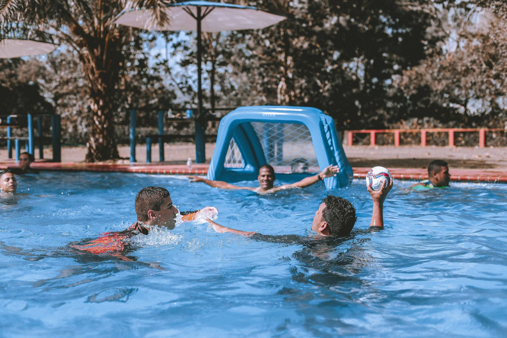

A Championship Season Is About More Than the Final Score
When the Ramona boys water polo team recently closed out their season as Valley League co-champions in San Diego, it was a moment worth celebrating far beyond Southern California. Stories like this one serve as a powerful reminder of what is possible when young athletes commit to a sport, trust their teammates, and push through the challenges of a full competitive season. For families in Wesley Chapel, Land O' Lakes, and across the Tampa Bay area, this kind of achievement reflects the same journey unfolding right here in our own backyard.
Water polo is one of the most demanding team sports a young athlete can pursue. It requires cardiovascular endurance, technical swimming ability, tactical awareness, and the mental toughness to compete under pressure — all at the same time. When a team reaches the top of their league, it is because every player contributed, every practice mattered, and every moment of difficulty became a building block rather than a barrier.
The Habits That Build Champions
Championship teams are not created overnight. They are built through consistent daily effort and the kind of intentional preparation that extends well beyond game day. Whether young athletes are just beginning their water polo journey or are seasoned competitors working toward a recruiting opportunity, the following habits separate good players from great ones.
- Consistent attendance at practice: Showing up — especially on the hard days — is the foundation of long-term improvement.
- Active communication in the water: Water polo rewards players who call for the ball, direct their teammates, and stay vocal throughout every possession.
- Cross-training through swimming: Strong swimmers make stronger water polo players. Improving technique in the pool translates directly to better performance during matches.
- Film and self-review: Watching game footage with a coach helps young athletes understand positioning, decision-making, and areas for growth in a way that in-water feedback alone cannot always provide.
- Rest and recovery: Young athletes who prioritize sleep and proper nutrition recover faster and perform more consistently over the course of a long season.
Team Culture Makes the Difference
One of the most meaningful takeaways from a co-championship finish is what it says about team culture. No individual player wins a league title alone. When players hold each other accountable, celebrate each other's progress, and genuinely believe in a shared goal, the results speak for themselves. Coaches and parents both play a critical role in reinforcing that culture — not just by cheering for victories, but by praising effort, resilience, and sportsmanship throughout the entire season.
At Nexar Aquatic Academy, we believe that building strong team culture begins at the youth level. When young athletes learn early on that their voice matters in the water and their effort matters in practice, they carry that mindset with them throughout their athletic career and beyond.
Bringing Championship Mindset to Tampa Bay
The Tampa Bay area is home to a growing community of passionate water polo families, and the potential for our region's young athletes to compete at the highest levels has never been greater. Stories of co-championships earned through discipline and teamwork in places like San Diego remind us that those same outcomes are within reach for players training right here in Wesley Chapel and Land O' Lakes.
If your young athlete is ready to take their water polo or swimming development seriously, Nexar Aquatic Academy is here to support that journey every step of the way. A championship season does not happen by accident — and neither does a champion's mindset. It starts today, in the water, one practice at a time.
Ready to get in the water?
First practice is completely FREE — no commitment needed.